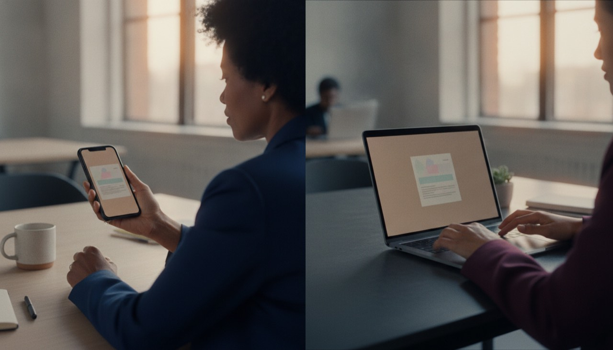

What the assistant can prepare
It can bring together the facts, with sources shown, and point out what is still unknown before people meet.
The scenario Friday, 4:52 pm. Rowan from Seaside Health asks for secure sign-in in the 14 August launch.
What happens Nobody has said who can agree to a new date, a new cost, or a safety check. This is how every mess starts.
Try it
01 · The question
In this made-up example, Rowan from Seaside Health asks whether secure sign-in can be added to a 14 August launch. The request does not say who can agree to a new date, a new cost, or a safety check.
Fictional example — an idea we’re researching, not a finished product.
It can bring together the facts, with sources shown, and point out what is still unknown before people meet.
People decide whether to change the feature, date, or cost, and who is allowed to say yes.
The scenario Before anything is prepared, Alex decides what the assistant may read.
What happens The assistant only sees what a person deliberately shares — the agreement, the plan, the build notes. Nothing else.
Try it
02 · Choose what the assistant may look at
Choose at least three useful items. The assistant can show the facts with sources shown. Personal information stays out unless a person deliberately includes it.
Nothing is selected yet.
The scenario Monday morning. The assistant has done its homework.
What happens Every fact sits next to its source. What isn't known stays marked as a question instead of quietly becoming a decision.
Try it
03 · Shared fact sheet
This shared fact sheet keeps each detail next to where it comes from. When something is not known, it stays marked as a question instead of becoming a decision by accident.
Can secure sign-in be part of the 14 August launch?
Asked by RowanThe current work needs about three working days before the safety check.
Build notesA review of the sign-in provider is still incomplete.
Still openA cost over NZ$2,000 needs someone from both companies to agree.
Signed agreement“For launch” might mean both the feature and the date must stay fixed.
Needs checkingThe scenario One question still needs people: the safety check against the launch date.
What happens Instead of booking an hour with eight people, the assistant proposes the smallest conversation that can settle it.
Try it
04 · Pick the right-size conversation
The build work can continue, but the safety question still needs a person’s answer. Choose how people should work through the feature, date, and cost together.
Pick a conversation to continue.
The scenario Three people, nine minutes: Alex, Rowan and Sam.
What happens The options were prepared before anyone joined. The meeting only decides — it doesn't rummage for facts.
Try it
05 · Make a choice
The assistant prepares options before the people meet. In this fictional example, Jules, Rowan, and Sam decide which option to use.
Can update the plan, but cannot choose the customer risk or price.
Can choose the feature and date within the current budget.
Can say yes to a safe review path, but cannot ignore unknown checks.
Choose an option to make the shared record.

The scenario Talk isn't a deal.
What happens Everyone reads the same exact words and approves for themselves. An edit makes a new version, and every approval resets.
Try it
06 · Both sides approve
A conversation is not enough on its own. Everyone sees the same words before they approve. If the wording changes, a new version starts for everyone.
0 of 3 people have approved this shared record.
The scenario Nothing updates by itself.
What happens Each system change is previewed word-for-word before it's sent. Approve it, and only then does anything move.
Try it
07 · Preview updates
Each person sees only the update they need. Read the exact wording before anything is sent in this fictional example.
Choose an option first.
Not sentChoose an option first.
Not sentChoose an option first.
Not sentChoose an option first.
Not sentNothing has been sent.
The scenario One week later.
What happens The result is checked against the record — a kept promise is provable, and a slip shows up early instead of at invoice time.
Try it
08 · Check the promise
Move this fictional example forward one week. It compares what happened with the shared record, so a difference can be noticed and discussed.
This made-up example has not been moved forward yet.
A usual meeting
This research idea
Fictional example. It does not show a real customer outcome.